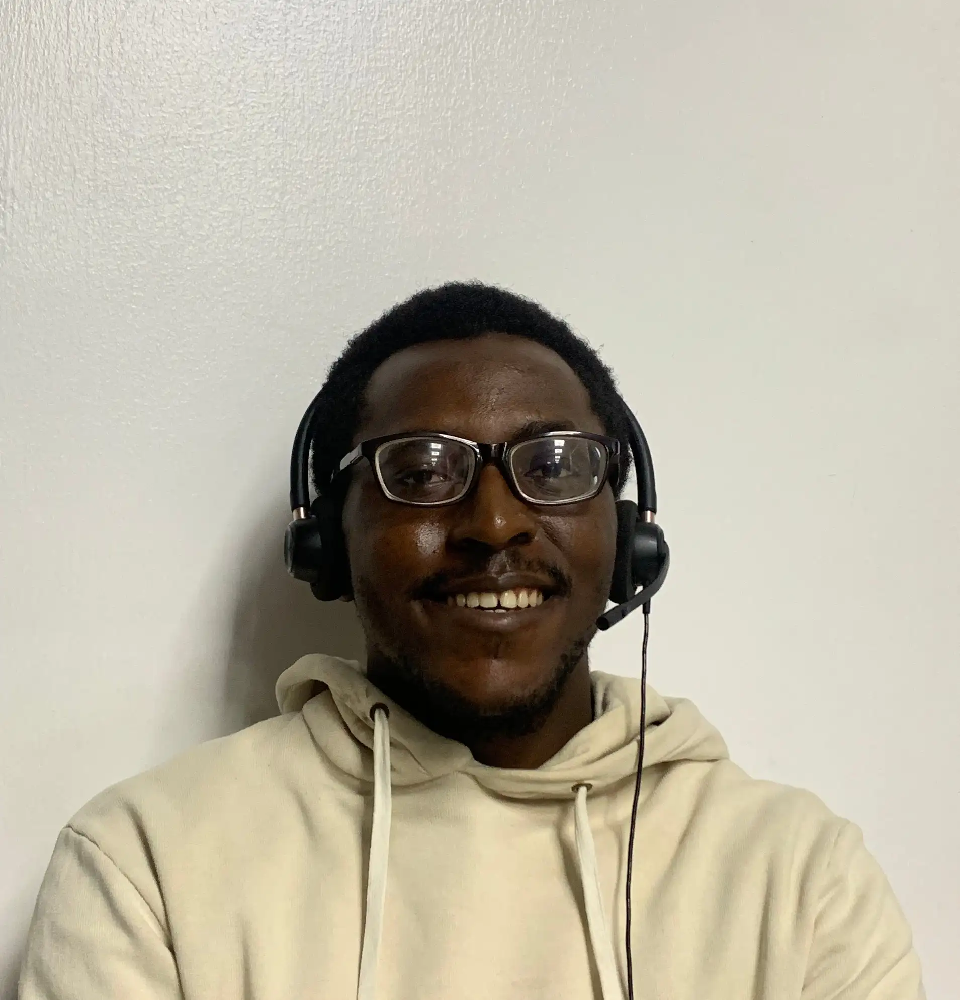

About Me
Hi, I'm Prince Ive Eriabie, a passionate learner with a deep love for technology and problem-solving. Growing up in Benin, I discovered my interest in computers, which led me to pursue a degree in Industrial Mathematics at the University of Benin. I'm pursuing a degree in Software Development at BYU Pathway, combining my technical skills and passion for education to advance my career in tech. I've gained practical experience in web development, customer support, and leadership through internships and my two-year mission for the Church of Jesus Christ of Latter-day Saints. These experiences have helped me develop strong problem-solving abilities, attention to detail, and a commitment to making an impact.